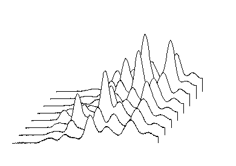

_Waterfall_Tab/Waterfall3.png)
This tab is only available when you create a 2D Waterfall graph:
Contents |
Select this box to show lines hidden by plots in the foreground.
|  | |
| Hidden lines are not shown | Hidden lines are shown |
|---|
Line offsets can be controlled by values in a worksheet labels row, including Long Name, Comments, Units, Sampling Interval and UserDefined. Only numeric values are allowed. Select a label row from this drop-down list to specify the worksheet Z value source row. By default, the numeric label row with the maximum index in the drop-down list will supply values for the Z axis, if there are more than one numeric label rows available. If there are no numeric label rows available, the Auto option is selected and the name of the column is used.
In the following example, a user-defined parameter in the worksheet, Excitation Wavelength (nm), is selected as the Z value source for the waterfall graph. The offset between the "700" and the "900" curves is twice the offset between the "600" and the "700" curves, because:
_Waterfall_Tab/math-ebcb1e5e5240f4cacc87b3912cd4107c.png "900-700 = 2*(700-600)")
Similarly, the offset between the "900" and the "1200" curves is three times the offset between the "600" and the "700" curves.
The same control exists for 3D waterfall graphs and is located on the Miscellaneous tab of Plot Details dialog box.
Use the X Offset and Y Offset to change the X offset and Y offset between adjacent plots, so to control the plot viewing angle (note that for a 2D waterfall, the plot viewing angle can be manipulated graphically by selecting the graph layer and manipulating the selection handles, and for a 3D waterfall, using the Skew button).
For more information on controlling a 2D waterfall plot viewing angle by graphically manipulating the plot, see Customizing Waterfall Plots.
This check-box is used to set Z axis title whether or not to "lay down" in the axis plane. The difference is shown in the following image.
| Check the In Plane Z Axis Title check-box | Uncheck the In Plane Z Axis Title check-box |
|---|
For 3D Waterfall graph, you can go to the Axis tab to rotate the tick labels/axis title/ticks.